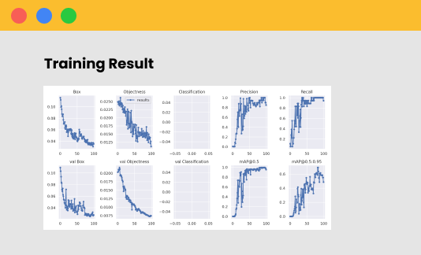
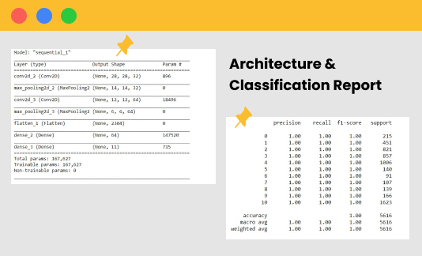
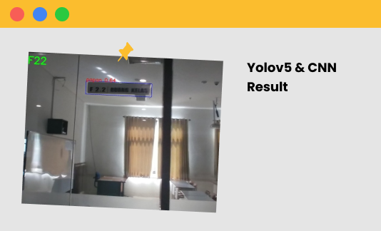

Object Detection Using yoloV5
yolov5 is used to detect objects with the class name "papan" that contains a room name. yolov5 can already detect "papan" objects very well
Desktop Application
Object detection & Text Charachter Classification
"Applications that try to detect an object and read the charachter contained in that object"
Github Repositoryyolov5 is used to detect objects with the class name "papan" that contains a room name. yolov5 can already detect "papan" objects very well


Convolutional Neural Network (CNN) is used for the classification of charachters found in extracted images. CNN conducted 10 class targets to ease the classification process.
CNN and yolov5 combined to be able to detect objects and try to read the charachter contained in the object and display the results in images and sounds.
